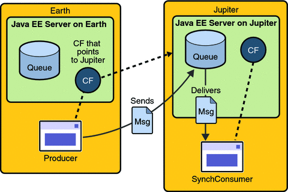

Writing Simple JMS Applications
This section shows how to create, package, and run simple JMS clients that are packaged as application clients and deployed to a Java EE server. The clients demonstrate the basic tasks that a JMS application must perform:
Creating a connection and a session
Creating message producers and consumers
Sending and receiving messages
In a Java EE application, some of these tasks are performed, in whole or in part, by the container. If you learn about these tasks, you will have a good basis for understanding how a JMS application works on the Java EE platform.
Each example uses two clients: one that sends messages and one that receives them. You can run the clients in NetBeans IDE or in two terminal windows.
When you write a JMS client to run in a enterprise bean application, you use many of the same methods in much the same sequence as you do for an application client. However, there are some significant differences. Using the JMS API in Java EE Applications describes these differences, and this chapter provides examples that illustrate them.
The examples for this section are in the following directory:
tut-install/examples/jms/simple/
The examples are in the following four subdirectories:
producer |
synchconsumer |
asynchconsumer |
messagebrowser |
A Simple Example of Synchronous Message Receives
This section describes the sending and receiving clients in an example that uses the receive method to consume messages synchronously. This section then explains how to compile, package, and run the clients using the GlassFish Server.
The following sections describe the steps in creating and running the example.
Writing the Clients for the Synchronous Receive Example
The sending client, producer/src/java/Producer.java, performs the following steps:
Injects resources for a connection factory, queue, and topic:
@Resource(lookup = "jms/ConnectionFactory") private static ConnectionFactory connectionFactory; @Resource(lookup = "jms/Queue")private static Queue queue; @Resource(lookup = "jms/Topic")private static Topic topic;
Retrieves and verifies command-line arguments that specify the destination type and the number of arguments:
final int NUM_MSGS; String destType = args[0]; System.out.println("Destination type is " + destType); if ( ! ( destType.equals("queue") || destType.equals("topic") ) ) { System.err.println("Argument must be \”queue\” or " + "\”topic\”"); System.exit(1); } if (args.length == 2){ NUM_MSGS = (new Integer(args[1])).intValue(); } else { NUM_MSGS = 1; }Assigns either the queue or topic to a destination object, based on the specified destination type:
Destination dest = null; try { if (destType.equals("queue")) { dest = (Destination) queue; } else { dest = (Destination) topic; } } catch (Exception e) { System.err.println("Error setting destination: " + e.toString()); e.printStackTrace(); System.exit(1); }Creates a Connection and a Session:
Connection connection = connectionFactory.createConnection(); Session session = connection.createSession(false, Session.AUTO_ACKNOWLEDGE);
Creates a MessageProducer and a TextMessage:
MessageProducer producer = session.createProducer(dest); TextMessage message = session.createTextMessage();
Sends one or more messages to the destination:
for (int i = 0; i < NUM_MSGS; i++) { message.setText("This is message " + (i + 1) + " from producer"); System.out.println("Sending message: " + message.getText()); producer.send(message); }Sends an empty control message to indicate the end of the message stream:
producer.send(session.createMessage());
Sending an empty message of no specified type is a convenient way to indicate to the consumer that the final message has arrived.
Closes the connection in a finally block, automatically closing the session and MessageProducer:
} finally { if (connection != null) { try { connection.close(); } catch (JMSException e) { } } }
The receiving client, synchconsumer/src/java/SynchConsumer.java, performs the following steps:
Injects resources for a connection factory, queue, and topic.
Assigns either the queue or topic to a destination object, based on the specified destination type.
Creates a Connection and a Session.
Creates a MessageConsumer:
consumer = session.createConsumer(dest);
Starts the connection, causing message delivery to begin:
connection.start();
Receives the messages sent to the destination until the end-of-message-stream control message is received:
while (true) { Message m = consumer.receive(1); if (m != null) { if (m instanceof TextMessage) { message = (TextMessage) m; System.out.println("Reading message: " + message.getText()); } else { break; } } }Because the control message is not a TextMessage, the receiving client terminates the while loop and stops receiving messages after the control message arrives.
Closes the connection in a finally block, automatically closing the session and MessageConsumer.
The receive method can be used in several ways to perform a synchronous receive. If you specify no arguments or an argument of 0, the method blocks indefinitely until a message arrives:
Message m = consumer.receive(); Message m = consumer.receive(0);
For a simple client, this may not matter. But if you do not want your application to consume system resources unnecessarily, use a timed synchronous receive. Do one of the following:
Call the receive method with a timeout argument greater than 0:
Message m = consumer.receive(1); // 1 millisecond
Call the receiveNoWait method, which receives a message only if one is available:
Message m = consumer.receiveNoWait();
The SynchConsumer client uses an indefinite while loop to receive messages, calling receive with a timeout argument. Calling receiveNoWait would have the same effect.
Starting the JMS Provider
When you use the GlassFish Server, your JMS provider is the GlassFish Server. Start the server as described in Starting and Stopping the GlassFish Server.
To Create JMS Administered Objects for the Synchronous Receive Example
Creating the JMS administered objects for this section involves the following:
Creating a connection factory
Creating two destination resources
If you built and ran the SimpleMessage example in Chapter 17, A Message-Driven Bean Example and did not delete the resources afterward, you need to create only the topic resource.
You can create these objects using the Ant tool. To create all the resources, follow these steps.
- In a terminal window, go to the producer directory:
cd producer
- To create all the resources, type the following command:
ant create-resources
To create only the topic resource, type the following command:
ant create-topic
These Ant targets use the asadmin create-jms-resource command to create the connection factory and the destination resources.
- To verify that the resources have been created, use the following command:
asadmin list-jms-resources
The output looks like this:
jms/Queue jms/Topic jms/ConnectionFactory Command list-jms-resources executed successfully.
Building, Deploying, and Running the Clients for the Synchronous Receive Example
To run these examples using the GlassFish Server, package each one in an application client JAR file. The application client JAR file requires a manifest file, located in the src/conf directory for each example, along with the .class file.
The build.xml file for each example contains Ant targets that compile and package the example. The targets place the .class file for the example in the build/jar directory. Then the targets use the jar command to package the class file and the manifest file in an application client JAR file.
Because the examples use the common interfaces, you can run them using either a queue or a topic.
To Build and Package the Clients for the Synchronous Receive Example Using NetBeans IDE
To build and package the Producer and SynchConsumer examples using NetBeans IDE, follow these steps.
- In NetBeans IDE, choose Open Project from the File menu.
- In the Open Project dialog, navigate to tut-install/examples/jms/simple/.
- Select the producer folder.
- Select the Open as Main Project check box.
- Click Open Project.
- Right-click the project and choose Build.
To Deploy and Run the Clients for the Synchronous Receive Example Using NetBeans IDE
To deploy and run the Producer and SynchConsumer examples using NetBeans IDE, follow these steps.
- Deploy and run the Producer example:
- Right-click the producer project and choose Properties.
- Select Run from the Categories tree.
- In the Arguments field, type the following:
queue 3
- Click OK.
- Right-click the project and choose Run.
The output of the program looks like this (along with some application client container output):
Destination type is queue Sending message: This is message 1 from producer Sending message: This is message 2 from producer Sending message: This is message 3 from producer
The messages are now in the queue, waiting to be received.
Note - When you run an application client, there is usually a noticeable delay between the first two application client container messages and the remainder of the output.
- Now deploy and run the SynchConsumer example:
- Right-click the synchconsumer project and choose Properties.
- Select Run from the Categories tree.
- In the Arguments field, type the following:
queue
- Click OK.
- Right-click the project and choose Run.
The output of the program looks like this (along with some application client container output):
Destination type is queue Reading message: This is message 1 from producer Reading message: This is message 2 from producer Reading message: This is message 3 from producer
- Now try running the programs in the opposite order. Right-click the synchconsumer project
and choose Run.
The Output pane displays the destination type and then appears to hang, waiting for messages.
- Right-click the producer project and choose Run.
The Output pane shows the output of both programs, in two different tabs.
- Now run the Producer example using a topic instead of a queue.
- Right-click the producer project and choose Properties.
- Select Run from the Categories tree.
- In the Arguments field, type the following:
topic 3
- Click OK.
- Right-click the project and choose Run.
The output looks like this (along with some application client container output):
Destination type is topic Sending message: This is message 1 from producer Sending message: This is message 2 from producer Sending message: This is message 3 from producer
- Now run the SynchConsumer example using the topic.
- Right-click the synchconsumer project and choose Properties.
- Select Run from the Categories tree.
- In the Arguments field, type the following:
topic
- Click OK.
- Right-click the project and choose Run.
The result, however, is different. Because you are using a topic, messages that were sent before you started the consumer cannot be received. (See Publish/Subscribe Messaging Domain, for details.) Instead of receiving the messages, the program appears to hang.
- Run the Producer example again. Right-click the producer project and choose Run.
Now the SynchConsumer example receives the messages:
Destination type is topic Reading message: This is message 1 from producer Reading message: This is message 2 from producer Reading message: This is message 3 from producer
To Build and Package the Clients for the Synchronous Receive Example Using Ant
To build and package the Producer and SynchConsumer examples using Ant, follow these steps.
- In a terminal window, go to the producer directory:
cd producer
- Type the following command:
ant
- In a terminal window, go to the synchconsumer directory:
cd ../synchconsumer
- Type the following command:
ant
The targets place the application client JAR file in the dist directory for each example.
To Deploy and Run the Clients for the Synchronous Receive Example Using Ant and the appclient Command
You can run the clients using the appclient command. The build.xml file for each project includes a target that deploys the client and then retrieves the client stubs that the appclient command uses. Each of the clients takes one or more command-line arguments: a destination type and, for Producer, a number of messages.
To build, deploy, and run the Producer and SynchConsumer examples using Ant and the appclient, follow these steps.
To run the clients, you need two terminal windows.
- In a terminal window, go to the producer directory:
cd ../producer
- Deploy the client JAR file to the GlassFish Server, then retrieve the client
stubs:
ant getclient
Ignore the message that states that the application is deployed at a URL.
- Run the Producer program, sending three messages to the queue:
appclient -client client-jar/producerClient.jar queue 3
The output of the program looks like this (along with some application client container output):
Destination type is queue Sending message: This is message 1 from producer Sending message: This is message 2 from producer Sending message: This is message 3 from producer
The messages are now in the queue, waiting to be received.
Note - When you run an application client, there is usually a noticeable delay between the first two application client container messages and the remainder of the output.
- In the same window, go to the synchconsumer directory:
cd ../synchconsumer
- Deploy the client JAR file to the GlassFish Server, then retrieve the client
stubs:
ant getclient
Ignore the message that states that the application is deployed at a URL.
- Run the SynchConsumer client, specifying the queue:
appclient -client client-jar/synchconsumerClient.jar queue
The output of the client looks like this (along with some application client container output):
Destination type is queue Reading message: This is message 1 from producer Reading message: This is message 2 from producer Reading message: This is message 3 from producer
- Now try running the clients in the opposite order. Run the SynchConsumer
client:
appclient -client client-jar/synchconsumerClient.jar queue
The client displays the destination type and then appears to hang, waiting for messages.
- In a different terminal window, run the Producer client.
cd tut-install/examples/jms/simple/producer appclient -client client-jar/producerClient.jar queue 3
When the messages have been sent, the SynchConsumer client receives them and exits.
- Now run the Producer client using a topic instead of a queue:
appclient -client client-jar/producerClient.jar topic 3
The output of the client looks like this (along with some application client container output):
Destination type is topic Sending message: This is message 1 from producer Sending message: This is message 2 from producer Sending message: This is message 3 from producer
- Now run the SynchConsumer client using the topic:
appclient -client client-jar/synchconsumerClient.jar topic
The result, however, is different. Because you are using a topic, messages that were sent before you started the consumer cannot be received. (See Publish/Subscribe Messaging Domain, for details.) Instead of receiving the messages, the client appears to hang.
- Run the Producer client again.
Now the SynchConsumer client receives the messages (along with some application client container output):
Destination type is topic Reading message: This is message 1 from producer Reading message: This is message 2 from producer Reading message: This is message 3 from producer
A Simple Example of Asynchronous Message Consumption
This section describes the receiving clients in an example that uses a message listener to consume messages asynchronously. This section then explains how to compile and run the clients using the GlassFish Server.
Writing the Clients for the Asynchronous Receive Example
The sending client is producer/src/java/Producer.java, the same client used in the example in A Simple Example of Synchronous Message Receives.
An asynchronous consumer normally runs indefinitely. This one runs until the user types the letter q or Q to stop the client.
The receiving client, asynchconsumer/src/java/AsynchConsumer.java, performs the following steps:
Injects resources for a connection factory, queue, and topic.
Assigns either the queue or topic to a destination object, based on the specified destination type.
Creates a Connection and a Session.
Creates a MessageConsumer.
Creates an instance of the TextListener class and registers it as the message listener for the MessageConsumer:
listener = new TextListener();consumer.setMessageListener(listener);
Starts the connection, causing message delivery to begin.
Listens for the messages published to the destination, stopping when the user types the character q or Q:
System.out.println("To end program, type Q or q, " + "then <return>"); inputStreamReader = new InputStreamReader(System.in); while (!((answer == ’q’) || (answer == ’Q’))) { try { answer = (char) inputStreamReader.read(); } catch (IOException e) { System.out.println("I/O exception: " + e.toString()); } }Closes the connection, which automatically closes the session and MessageConsumer.
The message listener, asynchconsumer/src/java/TextListener.java, follows these steps:
When a message arrives, the onMessage method is called automatically.
The onMessage method converts the incoming message to a TextMessage and displays its content. If the message is not a text message, it reports this fact:
public void onMessage(Message message) { TextMessage msg = null; try { if (message instanceof TextMessage) { msg = (TextMessage) message; System.out.println("Reading message: " + msg.getText()); } else { System.out.println("Message is not a " + "TextMessage"); } } catch (JMSException e) { System.out.println("JMSException in onMessage(): " + e.toString()); } catch (Throwable t) { System.out.println("Exception in onMessage():" + t.getMessage()); } }
You will use the connection factory and destinations you created in To Create JMS Administered Objects for the Synchronous Receive Example.
To Build and Package the AsynchConsumer Client Using NetBeans IDE
To build and package the AsynchConsumer example using NetBeans IDE, follow these steps.
- In NetBeans IDE, choose Open Project from the File menu.
- In the Open Project dialog, navigate to tut-install/examples/jms/simple/.
- Select the asynchconsumer folder.
- Select the Open as Main Project check box.
- Click Open Project.
- Right-click the project and choose Build.
To Deploy and Run the Clients for the Asynchronous Receive Example Using NetBeans IDE
To deploy and run the clients using NetBeans IDE, follow these steps.
- Run the AsynchConsumer example:
- Right-click the asynchconsumer project and choose Properties.
- Select Run from the Categories tree.
- In the Arguments field, type the following:
topic
- Click OK.
- Right-click the project and choose Run.
The client displays the following lines and appears to hang:
Destination type is topic To end program, type Q or q, then <return>
- Now run the Producer example:
- Right-click the producer project and choose Properties.
- Select Run from the Categories tree.
- In the Arguments field, type the following:
topic 3
- Click OK.
- Right-click the project and choose Run.
The output of the client looks like this:
Destination type is topic Sending message: This is message 1 from producer Sending message: This is message 2 from producer Sending message: This is message 3 from producer
In the other window, the AsynchConsumer client displays the following:
Destination type is topic To end program, type Q or q, then <return> Reading message: This is message 1 from producer Reading message: This is message 2 from producer Reading message: This is message 3 from producer Message is not a TextMessage
The last line appears because the client has received the non-text control message sent by the Producer client.
- Type Q or q in the Output window and press Return to stop the client.
- Now run the Producer client using a queue.
In this case, as with the synchronous example, you can run the Producer client first, because there is no timing dependency between the sender and receiver.
- Right-click the producer project and choose Properties.
- Select Run from the Categories tree.
- In the Arguments field, type the following:
queue 3
- Click OK.
- Right-click the project and choose Run.
The output of the client looks like this:
Destination type is queue Sending message: This is message 1 from producer Sending message: This is message 2 from producer Sending message: This is message 3 from producer
- Run the AsynchConsumer client.
- Right-click the asynchconsumer project and choose Properties.
- Select Run from the Categories tree.
- In the Arguments field, type the following:
queue
- Click OK.
- Right-click the project and choose Run.
The output of the client looks like this:
Destination type is queue To end program, type Q or q, then <return> Reading message: This is message 1 from producer Reading message: This is message 2 from producer Reading message: This is message 3 from producer Message is not a TextMessage
- Type Q or q in the Output window and press Return to stop the client.
To Build and Package the AsynchConsumer Client Using Ant
To build and package the AsynchConsumer example using Ant, follow these steps.
- In a terminal window, go to the asynchconsumer directory:
cd ../asynchconsumer
- Type the following command:
ant
The targets package both the main class and the message listener class in the JAR file and place the file in the dist directory for the example.
To Deploy and Run the Clients for the Asynchronous Receive Example Using Ant and the appclient Command
To deploy and run the clients using Ant and the appclient command, follow these steps.
- Deploy the client JAR file to the GlassFish Server, then retrieve the client
stubs:
ant getclient
Ignore the message that states that the application is deployed at a URL.
- Run the AsynchConsumer client, specifying the topic destination type.
appclient -client client-jar/asynchconsumerClient.jar topic
The client displays the following lines (along with some application client container output) and appears to hang:
Destination type is topic To end program, type Q or q, then <return>
- In the terminal window where you ran the Producer client previously, run the
client again, sending three messages.
appclient -client client-jar/producerClient.jar topic 3
The output of the client looks like this (along with some application client container output):
Destination type is topic Sending message: This is message 1 from producer Sending message: This is message 2 from producer Sending message: This is message 3 from producer
In the other window, the AsynchConsumer client displays the following (along with some application client container output):
Destination type is topic To end program, type Q or q, then <return> Reading message: This is message 1 from producer Reading message: This is message 2 from producer Reading message: This is message 3 from producer Message is not a TextMessage
The last line appears because the client has received the non-text control message sent by the Producer client.
- Type Q or q and press Return to stop the client.
- Now run the clients using a queue.
In this case, as with the synchronous example, you can run the Producer client first, because there is no timing dependency between the sender and receiver:
appclient -client client-jar/producerClient.jar queue 3
The output of the client looks like this:
Destination type is queue Sending message: This is message 1 from producer Sending message: This is message 2 from producer Sending message: This is message 3 from producer
- Run the AsynchConsumer client:
appclient -client client-jar/asynchconsumerClient.jar queue
The output of the client looks like this (along with some application client container output):
Destination type is queue To end program, type Q or q, then <return> Reading message: This is message 1 from producer Reading message: This is message 2 from producer Reading message: This is message 3 from producer Message is not a TextMessage
- Type Q or q to stop the client.
A Simple Example of Browsing Messages in a Queue
This section describes an example that creates a QueueBrowser object to examine messages on a queue, as described in JMS Queue Browsers. This section then explains how to compile, package, and run the example using the GlassFish Server.
Writing the Client for the Queue Browser Example
To create a QueueBrowser for a queue, you call the Session.createBrowser method with the queue as the argument. You obtain the messages in the queue as an Enumeration object. You can then iterate through the Enumeration object and display the contents of each message.
The messagebrowser/src/java/MessageBrowser.java client performs the following steps:
Injects resources for a connection factory and a queue.
Creates a Connection and a Session.
Creates a QueueBrowser:
QueueBrowser browser = session.createBrowser(queue);
Retrieves the Enumeration that contains the messages:
Enumeration msgs = browser.getEnumeration();
Verifies that the Enumeration contains messages, then displays the contents of the messages:
if ( !msgs.hasMoreElements() ) { System.out.println("No messages in queue"); } else { while (msgs.hasMoreElements()) { Message tempMsg = (Message)msgs.nextElement(); System.out.println("Message: " + tempMsg); } }Closes the connection, which automatically closes the session and QueueBrowser.
The format in which the message contents appear is implementation-specific. In the GlassFish Server, the message format looks like this:
Message contents: Text: This is message 3 from producer Class: com.sun.messaging.jmq.jmsclient.TextMessageImpl getJMSMessageID(): ID:14-129.148.71.199(f9:86:a2:d5:46:9b)-40814-1255980521747 getJMSTimestamp(): 1129061034355 getJMSCorrelationID(): null JMSReplyTo: null JMSDestination: PhysicalQueue getJMSDeliveryMode(): PERSISTENT getJMSRedelivered(): false getJMSType(): null getJMSExpiration(): 0 getJMSPriority(): 4 Properties: null
You will use the connection factory and queue you created in To Create JMS Administered Objects for the Synchronous Receive Example.
To Build, Package, Deploy, and Run the MessageBrowser Client Using NetBeans IDE
To build, package, deploy, and run the MessageBrowser example using NetBeans IDE, follow these steps.
You also need the Producer example to send the message to the queue, and one of the consumer clients to consume the messages after you inspect them. If you did not do so already, package these examples.
- In NetBeans IDE, choose Open Project from the File menu.
- In the Open Project dialog, navigate to tut-install/examples/jms/simple/.
- Select the messagebrowser folder.
- Select the Open as Main Project check box.
- Click Open Project.
- Right-click the project and choose Build.
- Run the Producer client, sending one message to the queue:
- Right-click the producer project and choose Properties.
- Select Run from the Categories tree.
- In the Arguments field, type the following:
queue
- Click OK.
- Right-click the project and choose Run.
The output of the client looks like this:
Destination type is queue Sending message: This is message 1 from producer
- Run the MessageBrowser client. Right-click the messagebrowser project and choose Run.
The output of the client looks like this:
Message: Text: This is message 1 from producer Class: com.sun.messaging.jmq.jmsclient.TextMessageImpl getJMSMessageID(): ID:12-129.148.71.199(8c:34:4a:1a:1b:b8)-40883-1255980521747 getJMSTimestamp(): 1129062957611 getJMSCorrelationID(): null JMSReplyTo: null JMSDestination: PhysicalQueue getJMSDeliveryMode(): PERSISTENT getJMSRedelivered(): false getJMSType(): null getJMSExpiration(): 0 getJMSPriority(): 4 Properties: null Message: Class: com.sun.messaging.jmq.jmsclient.MessageImpl getJMSMessageID(): ID:13-129.148.71.199(8c:34:4a:1a:1b:b8)-40883-1255980521747 getJMSTimestamp(): 1129062957616 getJMSCorrelationID(): null JMSReplyTo: null JMSDestination: PhysicalQueue getJMSDeliveryMode(): PERSISTENT getJMSRedelivered(): false getJMSType(): null getJMSExpiration(): 0 getJMSPriority(): 4 Properties: null
The first message is the TextMessage, and the second is the non-text control message.
- Run the SynchConsumer client to consume the messages.
- Right-click the synchconsumer project and choose Properties.
- Select Run from the Categories tree.
- In the Arguments field, type the following:
queue
- Click OK.
- Right-click the project and choose Run.
The output of the client looks like this:
Destination type is queue Reading message: This is message 1 from producer
To Build, Package, Deploy, and Run the MessageBrowser Client Using Ant and the appclient Command
To build, package, deploy, and run the MessageBrowser example using Ant, follow these steps.
You also need the Producer example to send the message to the queue, and one of the consumer clients to consume the messages after you inspect them. If you did not do so already, package these examples.
To run the clients, you need two terminal windows.
- In a terminal window, go to the messagebrowser directory.
cd ../messagebrowser
- Type the following command:
ant
The targets place the application client JAR file in the dist directory for the example.
- Go to the producer directory.
- Run the Producer client, sending one message to the queue:
appclient -client client-jar/producerClient.jar queue
The output of the client looks like this (along with some application client container output):
Destination type is queue Sending message: This is message 1 from producer
- Go to the messagebrowser directory.
- Deploy the client JAR file to the GlassFish Server, then retrieve the client
stubs:
ant getclient
Ignore the message that states that the application is deployed at a URL.
- Because this example takes no command-line arguments, you can run the MessageBrowser client
using the following command:
ant run
Alternatively, you can type the following command:
appclient -client client-jar/messagebrowserClient.jar
The output of the client looks like this (along with some application client container output):
Message: Text: This is message 1 from producer Class: com.sun.messaging.jmq.jmsclient.TextMessageImpl getJMSMessageID(): ID:12-129.148.71.199(8c:34:4a:1a:1b:b8)-40883-1255980521747 getJMSTimestamp(): 1255980521747 getJMSCorrelationID(): null JMSReplyTo: null JMSDestination: PhysicalQueue getJMSDeliveryMode(): PERSISTENT getJMSRedelivered(): false getJMSType(): null getJMSExpiration(): 0 getJMSPriority(): 4 Properties: null Message: Class: com.sun.messaging.jmq.jmsclient.MessageImpl getJMSMessageID(): ID:13-129.148.71.199(8c:34:4a:1a:1b:b8)-40883-1255980521767 getJMSTimestamp(): 1255980521767 getJMSCorrelationID(): null JMSReplyTo: null JMSDestination: PhysicalQueue getJMSDeliveryMode(): PERSISTENT getJMSRedelivered(): false getJMSType(): null getJMSExpiration(): 0 getJMSPriority(): 4 Properties: null
The first message is the TextMessage, and the second is the non-text control message.
- Go to the synchconsumer directory.
- Run the SynchConsumer client to consume the messages:
appclient -client client-jar/synchconsumerClient.jar queue
The output of the client looks like this (along with some application client container output):
Destination type is queue Reading message: This is message 1 from producer
Running JMS Clients on Multiple Systems
JMS clients that use the GlassFish Server can exchange messages with each other when they are running on different systems in a network. The systems must be visible to each other by name (the UNIX host name or the Microsoft Windows computer name) and must both be running the GlassFish Server.
Note - Any mechanism for exchanging messages between systems is specific to the Java EE server implementation. This tutorial describes how to use the GlassFish Server for this purpose.
Suppose that you want to run the Producer client on one system, earth, and the SynchConsumer client on another system, jupiter. Before you can do so, you need to perform these tasks:
Create two new connection factories
Change the name of the default JMS host on one system
Edit the source code for the two examples
Recompile and repackage the examples
Note - A limitation in the JMS provider in the GlassFish Server may cause a runtime failure to create a connection to systems that use the Dynamic Host Configuration Protocol (DHCP) to obtain an IP address. You can, however, create a connection from a system that uses DHCP to a system that does not use DHCP. In the examples in this tutorial, earth can be a system that uses DHCP, and jupiter can be a system that does not use DHCP.
When you run the clients, they will work as shown in Figure 31-1. The client run on earth needs the queue on earth only in order that the resource injection will succeed. The connection, session, and message producer are all created on jupiter using the connection factory that points to jupiter. The messages sent from earth will be received on jupiter.
Figure 31-1 Sending Messages from One System to Another
For examples showing how to deploy more complex applications on two different systems, see An Application Example That Consumes Messages from a Remote Server and An Application Example That Deploys a Message-Driven Bean on Two Servers.
To Create Administered Objects for Multiple Systems
To run these clients, you must do the following:
Create a new connection factory on both earth and jupiter
Create a destination resource on both earth and jupiter
You do not have to install the tutorial examples on both systems, but you must be able to access the filesystem where it is installed. You may find it more convenient to install the tutorial examples on both systems if the two systems use different operating systems (for example, Windows and Solaris). Otherwise you will have to edit the file tut-install/examples/bp-project/build.properties and change the location of the javaee.home property each time you build or run a client on a different system.
- Start the GlassFish Server on earth.
- Start the GlassFish Server on jupiter.
- To create a new connection factory on jupiter, follow these steps:
- From a command shell on jupiter, go to the directory tut-install/examples/jms/simple/producer/.
- Type the following command:
ant create-local-factory
The create-local-factory target, defined in the build.xml file for the Producer example, creates a connection factory named jms/JupiterConnectionFactory.
- To create a new connection factory on earth that points to the connection
factory on jupiter, follow these steps:
- From a command shell on earth, go to the directory tut-install/examples/jms/simple/producer/.
- Type the following command:
ant create-remote-factory -Dsys=remote-system-name
Replace remote-system-name with the actual name of the remote system.
The create-remote-factory target, defined in the build.xml file for the Producer example, also creates a connection factory named jms/JupiterConnectionFactory. In addition, it sets the AddressList property for this factory to the name of the remote system.
- If you have already been working on either earth or jupiter, you
have the queue and topic on one system. On the system that does
not have the queue and topic, type the following command:
ant create-resources
Changing the Default Host Name
By default, the default host name for the JMS service on the GlassFish Server is localhost. To access the JMS service from another system, however, you must change the host name. You can change it to either the actual host name or to 0.0.0.0.
You can change the default host name using either the Administration Console or the asadmin command.
To Change the Default Host Name Using the Administration Console
To change the default host name using the Administration Console, follow these steps.
- On jupiter, start the Administration Console by opening a browser at http://localhost:4848/.
- In the navigation tree, expand the Configuration node.
- Under the Configuration node, expand the Java Message Service node.
- Under the Java Message Service node, expand the JMS Hosts node.
- Under the JMS Hosts node, select default_JMS_host.
The Edit JMS Host page opens.
- In the Host field, type the name of the system, or type 0.0.0.0.
- Click Save.
- Restart the GlassFish Server.
To Change the Default Host Name Using the asadmin Command
To change the default host name using the asadmin command, follow these steps.
- Specify a command like one of the following:
asadmin set server-config.jms-service.jms-host.default_JMS_host.host="0.0.0.0"
asadmin set server-config.jms-service.jms-host.default_JMS_host.host="hostname"
- Restart the GlassFish Server.
To Edit, Build, Package, Deploy, and Run the Clients Using NetBeans IDE
These steps assume that you have the tutorial installed on both of the two systems you are using and that you are able to access the file system of jupiter from earth or vice versa. You will edit the source files to specify the new connection factory. Then you will rebuild and run the clients. Follow these steps.
- To edit the source files, follow these steps:
- On earth,, open the following file in NetBeans IDE:
tut-install/examples/jms/simple/producer/src/java/Producer.java
- Find the following line:
@Resource(lookup = "jms/ConnectionFactory")
- Change the line to the following:
@Resource(lookup = "jms/JupiterConnectionFactory")
- On jupiter, open the following file inNetBeans IDE:
tut-install/examples/jms/simple/synchconsumer/src/java/SynchConsumer.java
- Repeat steps Step b and Step c.
- On earth,, open the following file in NetBeans IDE:
- To recompile and repackage the Producer example on earth, right-click the producer project and choose Clean and Build.
- To recompile and repackage the SynchConsumer example on jupiter, right-click the synchconsumer project and choose Clean and Build.
- On earth, deploy and run Producer. Follow these steps:
- Right-click the producer project and choose Properties.
- Select Run from the Categories tree.
- In the Arguments field, type the following:
queue 3
- Click OK.
- Right-click the project and choose Run.
- On jupiter, run SynchConsumer. Follow these steps:
- Right-click the synchconsumer project and choose Properties.
- Select Run from the Categories tree.
- In the Arguments field, type the following:
queue
- Click OK.
- Right-click the project and choose Run.
To Edit, Build, Package, Deploy, and Run the Clients Using Ant and the appclient Command
These steps assume that you have the tutorial installed on both of the two systems you are using and that you are able to access the file system of jupiter from earth or vice versa. You will edit the source files to specify the new connection factory. Then you will rebuild and run the clients. Follow these steps.
- To edit the source files, follow these steps:
- On earth,, open the following file in a text editor:
tut-install/examples/jms/simple/producer/src/java/Producer.java
- Find the following line:
@Resource(lookup = "jms/ConnectionFactory")
- Change the line to the following:
@Resource(lookup = "jms/JupiterConnectionFactory")
- On jupiter, open the following file in a text editor:
tut-install/examples/jms/simple/synchconsumer/src/java/SynchConsumer.java
- Repeat steps Step b and Step c.
- On earth,, open the following file in a text editor:
- To recompile and repackage the Producer example on earth, type the following:
ant
- To recompile and repackage the SynchConsumer example on jupiter, go to the synchconsumer
directory and type the following:
ant
- On earth, deploy and run Producer. Follow these steps:
- On earth, from the producer directory, deploy the client JAR file to
the GlassFish Server, then retrieve the client stubs:
ant getclient
Ignore the message that states that the application is deployed at a URL.
- To run the client, type the following:
appclient -client client-jar/producerClient.jar queue 3
- On earth, from the producer directory, deploy the client JAR file to
the GlassFish Server, then retrieve the client stubs:
- On jupiter, run SynchConsumer. Follow these steps:
- From the synchconsumer directory, deploy the client JAR file to the GlassFish Server,
then retrieve the client stubs:
ant getclient
Ignore the message that states that the application is deployed at a URL.
- To run the client, type the following:
appclient -client client-jar/synchconsumerClient.jar queue
- From the synchconsumer directory, deploy the client JAR file to the GlassFish Server,
then retrieve the client stubs:
Undeploying and Cleaning the Simple JMS Examples
After you finish running the examples, you can undeploy them and remove the build artifacts.
You can also use Ant targets in the producer/build.xml file to delete the destinations and connection factories you created in To Create JMS Administered Objects for the Synchronous Receive Example. However, it is recommended that you keep them, because they will be used in most of the examples later in this chapter. After you have created them, they will be available whenever you restart the GlassFish Server.
To Undeploy and Clean the Simple JMS Examples Using NetBeans IDE
To undeploy the examples and remove the build artifacts using NetBeans IDE, follow these steps.
- To undeploy the examples, follow these steps.
- Click the Services tab.
- Expand the Servers node.
- Expand the GlassFish v3 Domain node.
- Expand or refresh the Applications node.
- Right-click each deployed example and choose Undeploy.
- To delete the class and JAR files for each client, follow these steps.
- Click the Projects tab.
- Right-click each project and choose Clean.
To Undeploy and Clean the Simple JMS Examples Using Ant
To undeploy the examples and remove the build artifacts using Ant, follow these steps.
- To undeploy each client, go to the directory for the client and type
the following:
ant undeploy
- To delete the class and JAR files for each client, go to
the directory for the client and type the following:
ant clean
- If you wish to delete the connection factories and destinations, go to the
producer directory and type the following:
ant delete-resources ant delete-remote-factory
Remember to delete the remote connection factory on both systems.